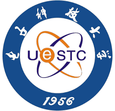
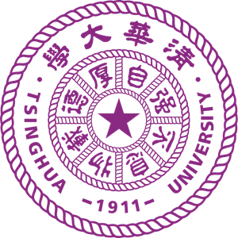

𝑪𝒉𝒆𝒏𝒈 𝑯𝒖𝒂𝒏𝒈, 𝑷𝒉.𝑫. 🍊
✨ I have gotten the Ph.D. degree from Southern Methodist University (SMU) on November 18, 2025. Prior to that, I got my master's degree from the Chinese University of Hong Kong (CUHK) in 2022. And I obtained the bachelor's degree from University of Electronic Science and Technology of China (UESTC) in 2020.
✨✨✨ I am the first and also currently the only person in SMU history to complete the Ph.D. program in just two years! ✨✨✨
My long-term vision is to advance AI for Health Care by building clinically grounded, trustworthy, and multimodal intelligence systems. I frame this mission through the Hippocrates paradigm:
(1) Biomarker Intelligence
Discovering disease-specific biomarkers from multimodal medical data, like fundus, OCT, OCTA, and clinical metadata—through robust and interpretable AI.
(2) Clinically Aligned Generation
Developing multimodal report-generation and decision-support models that integrate imaging, physiology, and language to produce clinically reliable outputs.
(3) Autonomous Diagnostic Systems
Building agentic medical AI systems with reasoning, memory, and self-improving capabilities to support longitudinal disease progression modeling and early intervention.
News
- [2025/11]🥳🥳🥳 I successfully defended Ph.D. dissertation.
- [2025/11]🔥🔥🔥 1 paper was accepted by IEEE 19th BIBM!
- [2025/10]🔥🔥🔥 We have just released the survey: Tibetan Language and AI: A Comprehensive Survey of Resources, Methods and Challenges.
- [2025/09]1 paper was accepted by IEEE 25th BIBE!
- [2025/08]🚀🚀🚀 1 paper was accepted by EMNLP 2025!
- [2025/07]🔥🔥🔥 1 paper was accepted by ICONIP 2025!
- [2025/05]🥳🥳🥳 I was selected as the outstanding graduate student of the Department of computer science!
- [2025/05]🥳🥳🥳 I passed my mid-term PhD defense!
- [2025/04]🔥🔥🔥 2 papers are accepted by IEEE 47th EMBC
- [2025/03]1 paper is accepted by IEEE Journal of Systems Engineering and Electronics!
- [2024/11]🥳🥳🥳 I have passed my Ph.D. qualifying exams and am now a Ph.D. candidate rather than a Ph.D. student.
- [2024/11]1 paper is accepted by IEEE ICNC 2024.
- [2023/12]🔥🔥🔥 2 papers are accepted by AAAI 2024 and its Workshop.
- [2023/12]1 paper is accepted by Applied and Computational Engineering and is selected as the cover paper.
- [2023/08]🚀🚀🚀 Book "Neuromorphic Circuits for Nanoscale Devices (纳米忆阻器与神经计算)" has been published (ISBN: 9787111704119).
- [2023/07]🔥🔥🔥 1 paper is accepted by IEEE ICTAI 2023.
- [2022/12]1 paper is accepted by Biomedical Signal Processing and Control.
- [2022/05]🚀🚀🚀 1 paper is accepted by IEEE Transactions on Instrumentation and Measurement and is selected as the cover paper.
- [2021/06]🚀🚀🚀 2 papers are accepted by IEEE PRAI 2021 and both of them won the Excellent Presentation Award.
- [2020/08]1 paper is accepted by IEEE CDS 2020.
- [2020/07]1 paper is accepted by IEEE ICVRV 2020.
- [2020/07]1 paper is accepted by ACM ICRAI 2020.
- [2020/05]🔥🔥🔥 1 paper is accepted by IEEE 20th ICCT 2020.
Education

Southern Methodist University (SMU), USA
Ph.D. Degree in Computer Science • Sep. 2023 - Dec. 2025
Advisor: Prof. Jia Zhang (Core) & Dr. Karanjit Kooner & Prof. Jui-Kai Wang
Advisor: Prof. Jia Zhang (Core) & Dr. Karanjit Kooner & Prof. Jui-Kai Wang

The Chinese University of Hong Kong (CUHK), Hong Kong
Master Degree in Information Engineering • Sep. 2021 - Dec. 2022
Advisor: Prof. John Kar-Kin Zao
Advisor: Prof. John Kar-Kin Zao

University of Electronic Science and Technology of China (UESTC), China
Bachelor Degree in Information Engineering • Sep. 2016 - Jun. 2020
Advisor: Prof. Yongbin Yu
Advisor: Prof. Yongbin Yu
Research Experience

National Aeronautics and Space Administration (NASA), USA
Doctoral Research Fellow • Jan. 2024 - Dec. 2025
Advisor: Dr. Tsengdar Lee
Advisor: Dr. Tsengdar Lee

University of Texas Southwestern Medical Center (UTSW), USA
Research Scientist (Intern) • Jun. 2024 - Aug. 2024
Advisor: Dr. Karanjit Kooner & Prof. Jui-Kai Wang
Advisor: Dr. Karanjit Kooner & Prof. Jui-Kai Wang

Tsinghua University (THU), China
Research Associates • Mar. 2021 - Jul. 2021
Advisor: Prof. Huazhong Yang (Core) & Prof. Lu Zhang
Advisor: Prof. Huazhong Yang (Core) & Prof. Lu Zhang
Teaching Experience
Southern Methodist University (SMU), USA
Teaching Assistant (CS 2341, Data Structure) • Aug. 2023 - Dec. 2023
Supervisor: Prof. Michael Hahsler
Supervisor: Prof. Michael Hahsler
Work & Internship
Sichuan Jiuzhou Prevention and Control Technology Co., Ltd (JiuZhou), China
Computer Vision Researcher (Intern) • Jan. 2020 - May. 2020
Project: Remote Sensing & Image Processing
Project: Remote Sensing & Image Processing

Sichuan Electric Power Design & Consulting Co.,Ltd. (POWERCHINA), China
Communication Telecontrol Designer (Intern) • Jan. 2019 - Jul. 2019
Project: 5G Station Development
Project: 5G Station Development
Interview & Talk
Tibetan Language Processing & Modeling
Interview • Time: 09/12/2025, 17:00 pm - 18:30 pm, CT
Location: 225 North Avenue NW, Atlanta, GA 30332, USA (Georgia Institute of Technology)
Location: 225 North Avenue NW, Atlanta, GA 30332, USA (Georgia Institute of Technology)
Academic Service
- Committee: IEEE PRAI'25, AAAI'26
- Conference Reviewer: CVPR'25, MICCAI'25, ICME'25/26, IEEE PRAI'25, IEEE BIBE'25, ICONIP'25, IEEE EMBC'26, AAAI'26
- Journal Reviewer: IEEE Journal of Translational Engineering in Health and Medicine, American Journal of Diagnostic Imaging, Journal of Computer Sciences and Informatics, The Journal of Supercomputing
Principal Investigator
Project: Federated Learning Alignment Method under Multi-Type Data Distribution (2022KQNCX084)
Category: Guangdong Province Higher Education Youth Innovation Talent Project - Natural Science
Role: Co-PI, with Dr. Siyang Jiang
Description: A study on developing alignment methods in federated learning to address challenges posed by heterogeneous data distributions across clients, including differences in features, labels, and modalities.
Survey & Benchmark & Dataset
- [Tibetan AI] The First Comprehensive Survey about Tibetan Language and AI
- [TLUE] The First Tibetan Language Understanding Evaluation Benchmark
- [TIB-STC] The First and the Most Comprehensive Dataset for Large Language Model Understanding
- [TIBSTC-CoT] The First Dataset for Large Language Model Thinking and Reasoning
- [IFD] The First and Largest Financial Crime Detection Dataset
- [RetinaMix] The high-resolution OCTA dataset for glaucoma retina combining 2D and 3D methods
→ Survey:
→ Benchmark:
→ Dataset:
Personal Interests
- Anime: Dragon Ball series
- Hobby: Skiing, Fitness, Off-Roading, Hunting, Traveling
- Motto: 我还在寻找属于我自己的那朵花...至少ç°åœ¨æ˜¯è¿™æ ·çš„。